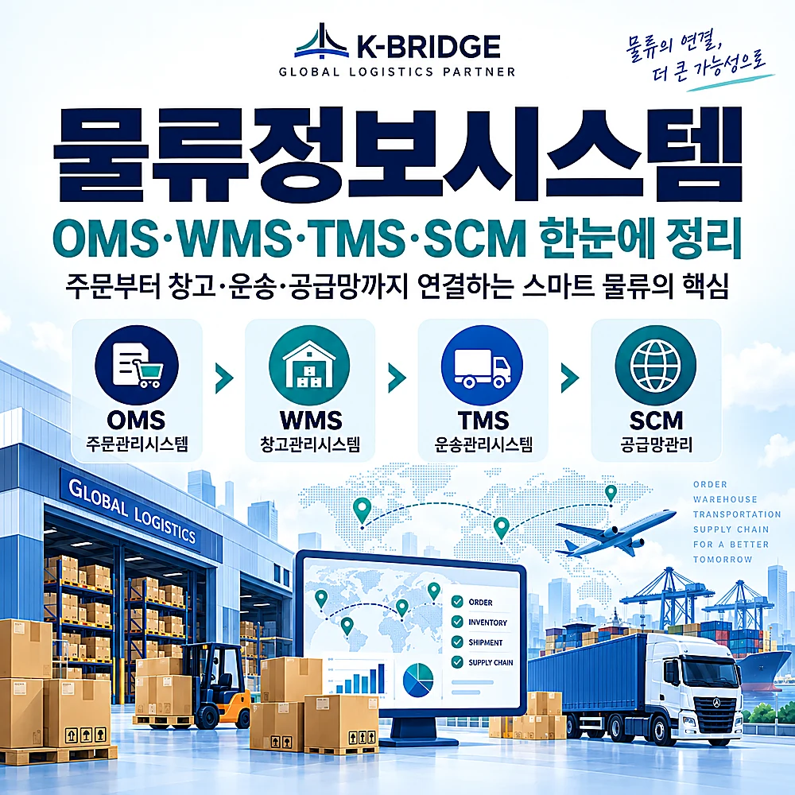
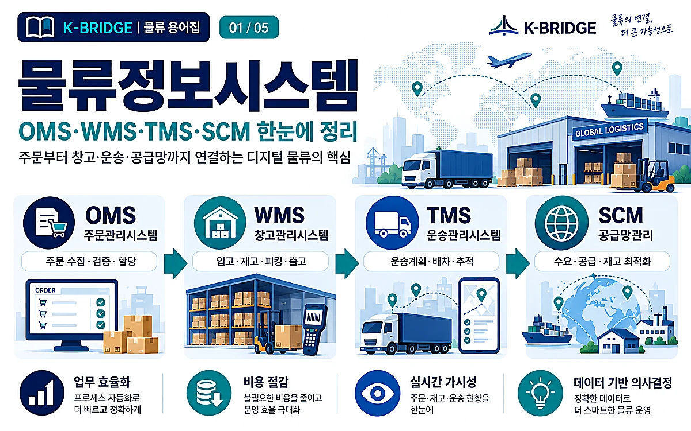
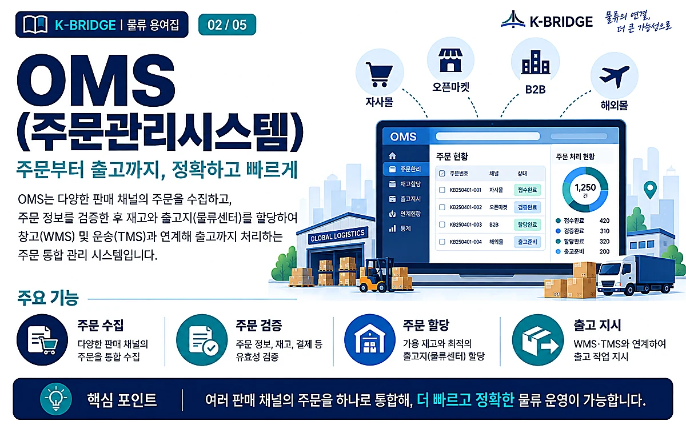
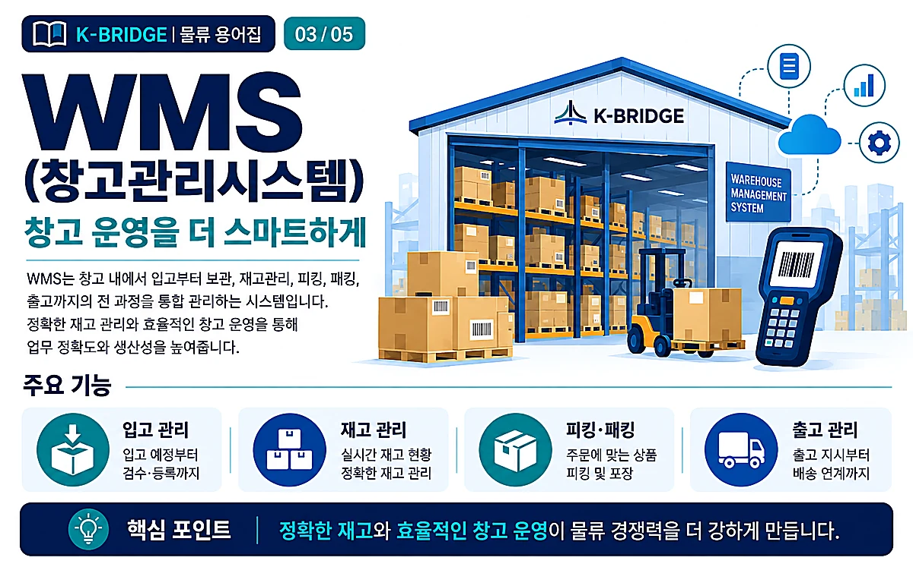
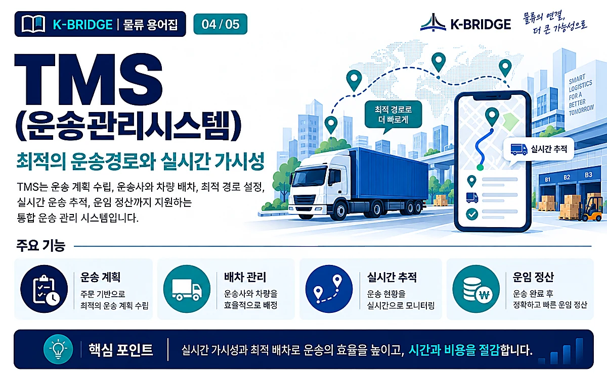
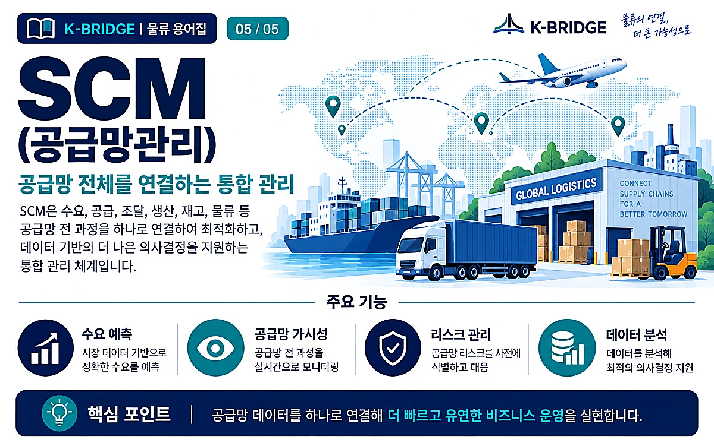

핵심 요약
물류정보시스템(Logistics Information System)은 주문·재고·창고·운송·공급망에서 발생하는 데이터를 연결해 물류를 계획하고 실행하며 추적하는 정보 체계입니다. OMS는 주문, WMS는 창고, TMS는 운송을 주로 담당하고, SCM은 수요·공급·조달·생산·재고·물류를 아우르는 더 넓은 공급망 관리 개념입니다. 2026년의 핵심은 시스템을 따로 쓰는 것이 아니라 클라우드·API·실시간 이벤트 데이터와 AI를 이용해 서로 연결하는 데 있습니다.

1. 물류정보시스템이란?
물류정보시스템은 물류 과정에서 발생하는 정보를 수집·공유·분석해 주문 처리부터 창고 운영, 운송, 공급망 의사결정까지 연결하는 정보 체계입니다. 과거에는 단순 전산화에 초점이 있었다면 현재는 여러 시스템과 파트너의 데이터를 실시간으로 연결해 예외 상황에 빠르게 대응하는 방향으로 발전하고 있습니다.
실무에서는 하나의 프로그램이 모든 것을 처리하기보다, 주문 단계의 OMS, 물류센터의 WMS, 운송 단계의 TMS가 API나 ERP·전자상거래 플랫폼과 연결되고, 더 상위에서 SCM이 수요·공급·재고·조달·물류 의사결정을 조정하는 구조가 일반적입니다.
2. OMS·WMS·TMS·SCM, 무엇이 다른가요?
| 구분 | 주요 관리 대상 | 대표 기능 | 핵심 질문 |
|---|---|---|---|
| OMS | 주문·고객·재고 약속 | 주문 수집·검증·할당·취소·반품·이행상태 | 어떤 주문을 어디에서 어떻게 이행할까? |
| WMS | 물류센터·재고 | 입고·적치·재고·보충·피킹·패킹·출고 | 창고 안에서 상품을 어떻게 정확하고 빠르게 움직일까? |
| TMS | 운송·차량·운송사 | 운송계획·배차·경로·추적·예외관리·운임정산 | 화물을 언제 어떤 경로와 운송수단으로 보낼까? |
| SCM | 전체 공급망 | 수요·공급·조달·생산·재고·물류 계획과 조정 | 공급망 전체를 어떻게 균형 있게 최적화할까? |
중요: SCM은 OMS·WMS·TMS와 정확히 같은 수준의 단일 실행 시스템이라기보다, 이들 실행 시스템과 계획·조달·생산 데이터를 묶어 공급망 전체를 관리하는 더 넓은 개념입니다.

3. OMS(Order Management System) - 주문관리시스템
OMS는 고객 주문을 접수한 뒤 검증하고, 재고와 출고 거점을 확인해 주문 이행을 조정하는 시스템입니다. 온라인몰·오프라인 매장·B2B·마켓플레이스처럼 주문 채널이 여러 개인 기업일수록 OMS의 역할이 커집니다.
- 주문 통합: 여러 판매채널의 주문을 한곳에서 수집하고 중복·오류를 줄입니다.
- 재고 약속: 판매 가능한 재고와 예정 입고를 바탕으로 주문 가능 여부와 출고 거점을 판단합니다.
- 이행 오케스트레이션: 창고·매장·3PL 등 가장 적합한 출고 지점으로 주문을 전달합니다.
- 취소·반품·상태관리: 주문 변경과 반품, 배송상태를 고객·판매채널과 연결합니다.
Oracle은 현재 OMS를 주문·재고·판매·고객 정보를 통합하고 주문-결제 과정의 이행과 예외를 중앙에서 관리하는 주문 허브로 설명합니다. 즉, 2026년의 OMS는 단순 주문접수 프로그램보다 옴니채널 주문 오케스트레이션에 가깝습니다.

4. WMS(Warehouse Management System) - 창고관리시스템
WMS는 물류센터 안에서 재고가 어디에 있고, 어떤 작업으로 이동하며, 어떤 순서로 출고되는지를 관리하는 실행 시스템입니다. 입고부터 적치, 재고, 보충, 피킹, 패킹, 검수, 출고까지 창고의 물리적 흐름을 데이터와 연결합니다.
- 입고·적치: ASN·입고검수·로케이션 배정으로 재고의 시작점을 정확히 기록합니다.
- 실시간 재고: 품목·LOT·유통기한·위치 단위로 가용재고를 추적합니다.
- 피킹·패킹: 웨이브·배치·존피킹 등 작업전략으로 이동거리와 오류를 줄입니다.
- 자동화 연동: 바코드·RF·AMR·컨베이어·로봇 등 자동화 설비와 데이터를 주고받습니다.
현대 WMS는 창고 내부의 단독 시스템을 넘어 ERP·OMS·TMS·자동화 설비와 연결되고, 클라우드 환경에서 실시간 재고 가시성과 주문이행을 지원하는 방향으로 발전하고 있습니다.

5. TMS(Transportation Management System) - 운송관리시스템
TMS는 화물을 어느 운송수단·운송사·경로로 보낼지 계획하고, 배차부터 운송 중 추적과 비용 정산까지 관리하는 시스템입니다. 단순 배송조회보다 범위가 넓습니다.
- 운송계획: 출발지·도착지·납기·화물조건을 바탕으로 운송모드와 경로를 설계합니다.
- 배차·운송사 관리: 차량·운송사·스페이스를 배정하고 예약·입찰을 관리합니다.
- 실시간 가시성: GPS·운송사 이벤트·EDI/API 데이터를 이용해 위치와 ETA를 추적합니다.
- 예외·정산: 지연·노선변경 등 예외를 처리하고 운임·할증료·정산 데이터를 관리합니다.
SAP는 현재 TMS를 글로벌·국내 운송의 계획, 운송사 협업, 실행, 가시성을 통합하는 도구로 설명하고 있으며, 최신 물류 플랫폼은 예측 ETA와 재라우팅·재스케줄링 같은 기능을 실시간 이벤트와 AI에 연결하는 방향으로 확장되고 있습니다.

6. SCM(Supply Chain Management) - 공급망관리
SCM은 원재료 조달부터 생산, 재고, 물류, 고객 인도까지 공급망 전체의 흐름을 계획하고 조정하는 관리 개념과 플랫폼입니다. OMS·WMS·TMS가 실행 데이터를 만든다면 SCM은 이 데이터를 수요예측·공급계획·재고전략·리스크관리와 연결해 전체 최적화를 목표로 합니다.
그래서 SCM을 단순히 '물류 프로그램 하나'로 이해하면 범위를 지나치게 좁게 보는 셈입니다. 실제 기업 환경에서는 ERP, 계획시스템, OMS, WMS, TMS, 공급업체·운송사 네트워크가 연결되어 하나의 공급망 운영 체계를 만듭니다.
7. 2026년 물류정보시스템의 최신 흐름
클라우드·API 중심의 연결
OMS·WMS·TMS를 각각 따로 운영하기보다 ERP, 이커머스, 3PL, 운송사와 API로 연결해 주문·재고·운송 이벤트를 공유하는 구조가 중요해졌습니다. 데이터가 끊기면 자동화보다 수작업 확인이 늘어나므로 연동 구조 자체가 경쟁력입니다.
실시간 가시성과 예측 ETA
단순 현재 위치를 보여주는 수준을 넘어 지연 가능성, 예상 도착시간, 재고 부족과 운송 예외를 조기에 감지해 대응하는 방향으로 발전하고 있습니다.
AI 기반 예외관리와 의사결정 지원
2026년에는 창고 인력·보충, 출고·배차, 운송 지연, 재라우팅 같은 업무에서 AI가 이상 신호를 감지하고 추천하거나 일부 실행을 자동화하는 흐름이 빠르게 확대되고 있습니다. 다만 AI의 성능도 정확한 기준정보와 연결된 데이터가 전제입니다.
시스템 통합보다 중요한 데이터 표준화
품목코드, 고객·주소, 로케이션, 포장단위, 운송상태 코드가 시스템마다 다르면 연결 후에도 오류가 반복됩니다. 솔루션 도입 전에 Master Data와 이벤트 정의를 먼저 정리하는 것이 중요합니다.
8. 도입 전 실무 체크리스트
- 문제부터 정의: 재고 정확도, 피킹 생산성, 배송지연, 운송비, 주문오류 중 무엇을 먼저 개선할지 정합니다.
- 업무 범위 확인: OMS·WMS·TMS 중 필요한 실행영역과 ERP/SCM의 역할을 구분합니다.
- 연동 대상 정리: 쇼핑몰·ERP·3PL·택배·포워더·운송사·자동화 설비와 어떤 데이터를 주고받을지 정의합니다.
- 기준정보 통일: SKU, 포장단위, 로케이션, 고객주소, 운송코드, 상태코드의 기준을 맞춥니다.
- KPI 설정: 주문처리시간, 재고정확도, 피킹오류율, 정시배송률, 차량적재율, 물류비 등 측정지표를 사전에 정합니다.
- 현장 사용성 검증: 기능 수보다 현장 작업자의 모바일·스캐너 동선과 예외처리가 실제 프로세스에 맞는지 확인합니다.
KEY TAKEAWAYS
이 글에서 기억할 것
- 핵심 요약 물류정보시스템(Logistics Information System) 은 주문·재고·창고·운송·공급망에서 발생하는 데이터를 연결해 물류를 계획하고 실행하며 추적하는 정보 체계입니다.
- OMS는 주문, WMS는 창고, TMS는 운송 을 주로 담당하고, SCM은 수요·공급·조달·생산·재고·물류를 아우르는 더 넓은 공급망 관리 개념 입니다.
- 2026년의 핵심은 시스템을 따로 쓰는 것이 아니라 클라우드·API·실시간 이벤트 데이터와 AI를 이용해 서로 연결 하는 데 있습니다.
9. 자주 묻는 질문
Q. OMS와 WMS는 무엇이 다른가요?
Q. TMS는 배송조회 시스템인가요?
Q. SCM도 하나의 프로그램인가요?
Q. 중소기업도 OMS·WMS·TMS를 모두 구축해야 하나요?
시스템 이름보다 실제 물류 흐름을 먼저 연결해야 합니다
KBRIDGE는 해상·항공·통관·창고·국내운송을 연결하면서 고객사의 주문·재고·운송 흐름에 맞는 물류 운영 방식을 함께 검토합니다. 물류 IT 도입 전에도 실제 선적·창고·배송 프로세스를 기준으로 필요한 데이터를 먼저 정리하는 것이 중요합니다.